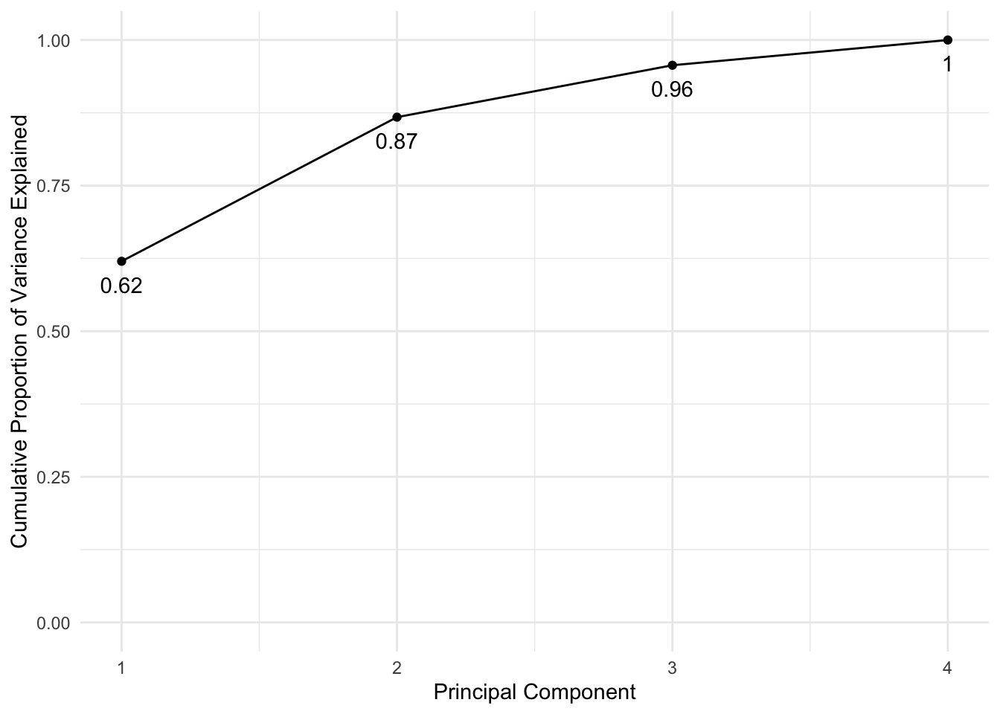

STA314 Materials
Michal Malyska
Preamble
Most of the work in this file is the edited version of solutions provided by Prof. Daniel Simpson who is the instructor for this course.
Resources
There is a number of resources available for you to learn and master the tidyverse package. It’s technically not required for the course but it will make your life a lot easier.
Learn R with tidyverse - this on it’s own should give you good enough background to handle most of the coding
Advanced R with tidyverse - most likely far beyond the scope of what’s needed for the course
Cheatsheets - very useful set of cheatsheets
There is a bunch more teaching materials avaialble on Alex’s webiste:
Library Load
These are all the libraries we will be using in the course and some additional ones for the extra work done from the R for Data Science textbook:
library(gridExtra)
library(MASS)
library(ISLR)
library(car)
library(modelr)
library(gapminder)
library(broom)
library(ggdendro)
library(dendextend)
# tidyverse goes last so that nothing overwrites the functions
library(tidyverse)
set.seed(217828)Week 2
Question 2
my_kmeans <- function(data, k, n_starts) {
done = FALSE # Initialize the condition vector
n = dim(data)[1] #data is a matrix, where each row is one data point
if (k == 1) {
cluster = rep(1, n) #this vector says which cluster each point is in
centers = apply(
X = data,
MARGIN = 2,
FUN = mean
) # Calculate the average distance
cost = sum((data - centers[cluster]) ^ 2) # Compute the cost function for the single cluster
return(list(cluster = cluster, cost = cost)) # Returns a list of [cluster, cost]
}
cluster_old = rep(1, n) # initialize clusters
cost_old = Inf # initialize cost
for (run in 1:n_starts) {
cluster = rep(1, n) #this vector says which cluster each point is in
#uniformly choose initial cluster centers
centers = data[sample(
x = 1:n,
size = k,
replace = FALSE)
, ] # Sampling datapoints to be cluster centers
while (!done) {
# Do Step 2.1
d = matrix(nrow = n, ncol = k) #initialize a matrix of size nxk
for (j in 1:k) {
d[, j] = apply(
X = data,
MARGIN = 1, #MARGIN = 1 => Rowwise
FUN = function(d) sum((d - centers[j, ]) ^ 2)
) # Computes the cost function for each point for each cluster center
}
cluster_new = apply(
X = d,
MARGIN = 1,
FUN = which.min
) # Take the minimum of the costs
# Throw an error if there is a cluster with no points in it
if (length(unique(cluster_new)) < k) stop("Empty cluster!")
# Do Step 2.2
for (i in 1:k) {
centers[i, ] = apply(
X = data[cluster_new == i, ],
MARGIN = 2, #MARGIN = 2 => Columnwise
FUN = mean) # Computes mean of the cluster for each cluster
}
# Check if the cluster assignements changed. If they have, set done=TRUE
if (all(cluster == cluster_new)) {
done = TRUE
}
# Update step
cluster = cluster_new
} #end of while not done
cost = sum((data - centers[cluster, ]) ^ 2) # Compute the cost
if (cost_old < cost) {
cluster = cluster_old
cost = cost_old
}
cost_old = cost
cluster_old = cluster
} # if the cost increased, undo
return(list(cluster = cluster, cost = cost))
}Task : Use this algorithm to make a 4 clustering of the data set in question2.RData. Comment on the clustering.
# Load the data from a data file
load("~/Desktop/University/Statistics/TA-ing/STA314/T2/question2.RData")
# Load the data from a csv file
#data_q2 <- read_csv("Question2_data.csv")
out = my_kmeans(dat_q2 #data
, 4 # number of clusters
, 2 # number of runs
)
dat_q2$cluster = out$cluster # Assign to the column "cluster" in dat_q2 the column "cluster" in out
dat_q2 %>% ggplot(aes(x = x,y = y)) +
geom_point(aes(colour = factor(cluster))) #plot
Depending on how many times the kmeans algorithm is run, it sometimes doesn’t find all four distinct clusters. This is due to the uniform intial sampling and the fact that the bottom left and top right clusters are much smaller than the other two. Try increasing the number of runs!
Question 3
# Input the data
d = matrix(c(0, 0.3, 0.4, 0.7,
0.3, 0, 0.5, 0.8,
0.4, 0.5, 0.0, 0.45,
0.7, 0.8, 0.45, 0.0), nrow = 4)
# Set it as distance
d = as.dist(d)# Plot the clusters with complete linkage:
plot(hclust(d,method = "complete"))
# Plot the clusters with complete linkage:
plot(hclust(d,method = "single"))
plot(hclust(d,method = "average"))
Comparing the two dendrograms, we see that the two clustering from the complete linkage is {1,2}, {3,4}, while the two clustering from the single linkage is {1,2,3}, {4}.
Question 4
For part a) there is not enough information. If the two linkages are equal, then they will fuse at the same hight. Otherwise, the single linkage dendrogram will merge at a lower hight as it only requires one nearby point and not all of the points to be close.
For part b) They’ll merge at the same hight because when you’re just merging single leaves, the linkages all reduce to the distance and are therefore equal.
Week 3
Lab 2
Medium house value (medv) for 506 neighborhoods in Boston. Includes 13 predictors such as: Avg number of rooms in the house, Avg age of houses, socioeconomic status.
# Load the data: (from the MASS package)
data(Boston)
# Check names of variables:
names(Boston)## [1] "crim" "zn" "indus" "chas" "nox" "rm" "age"
## [8] "dis" "rad" "tax" "ptratio" "black" "lstat" "medv"Let’s try fitting a linear model of medv ~ lstat (socioeconomic status)
# Results in an error - doesn't know where to get the data from.
# lm_fit <- lm(medv ~ lstat)
# Need to specify data = , this is good practice as opposed to following the
# order set by R inside of the functions most of the time.
lm_fit <- lm(data = Boston, formula = medv ~ lstat)Now let’s see what the result of the lm function looks like:
# Basic information:
lm_fit##
## Call:
## lm(formula = medv ~ lstat, data = Boston)
##
## Coefficients:
## (Intercept) lstat
## 34.55 -0.95# More comprehensive:
summary(lm_fit)##
## Call:
## lm(formula = medv ~ lstat, data = Boston)
##
## Residuals:
## Min 1Q Median 3Q Max
## -15.168 -3.990 -1.318 2.034 24.500
##
## Coefficients:
## Estimate Std. Error t value Pr(>|t|)
## (Intercept) 34.55384 0.56263 61.41 <2e-16 ***
## lstat -0.95005 0.03873 -24.53 <2e-16 ***
## ---
## Signif. codes: 0 '***' 0.001 '**' 0.01 '*' 0.05 '.' 0.1 ' ' 1
##
## Residual standard error: 6.216 on 504 degrees of freedom
## Multiple R-squared: 0.5441, Adjusted R-squared: 0.5432
## F-statistic: 601.6 on 1 and 504 DF, p-value: < 2.2e-16# What are the contents of lm?
names(lm_fit)## [1] "coefficients" "residuals" "effects" "rank"
## [5] "fitted.values" "assign" "qr" "df.residual"
## [9] "xlevels" "call" "terms" "model"# Extracting p-values:
## Save the summary(lm) as an object!
sum_lm <- summary(lm_fit)
## P-values are stored with coefficients in the fourth column:
### Intercept P-value:
sum_lm$coefficients[,4][1]## (Intercept)
## 3.743081e-236### lstat P-value:
sum_lm$coefficients[,4][2]## lstat
## 5.081103e-88# Or you can just call it directly:
summary(lm_fit)$coefficients[,4][1]## (Intercept)
## 3.743081e-236Now how about predicting and plotting the data:
# Find the intervals for new data
# Confidence intervals:
predict(lm_fit, data.frame(lstat = c(5, 10, 15)),
interval = 'confidence')## fit lwr upr
## 1 29.80359 29.00741 30.59978
## 2 25.05335 24.47413 25.63256
## 3 20.30310 19.73159 20.87461# Prediction interals:
predict(lm_fit, data.frame(lstat = c(5, 10, 15)),
interval = 'prediction')## fit lwr upr
## 1 29.80359 17.565675 42.04151
## 2 25.05335 12.827626 37.27907
## 3 20.30310 8.077742 32.52846# Plotting:
plot(Boston$lstat, Boston$medv)
abline(lm_fit)-1.png)
# Playing around with base graphics
plot(Boston$lstat, Boston$medv)
abline(lm_fit ,lwd = 3)
abline(lm_fit ,lwd = 3,col = "red")-2.png)
plot(Boston$lstat ,Boston$medv ,col = "red")-3.png)
plot(Boston$lstat ,Boston$medv ,pch = 20)-4.png)
plot(Boston$lstat ,Boston$medv ,pch = "+")-5.png)
# Some available symbols:
plot(1:20, 1:20, pch = 1:20)-6.png)
# Plotting multiple plots on the same line
par(mfrow = c(2,2))
# plot diagnostics
plot(lm_fit)-7.png)
# revert back to 1 plot per plot
par(mfrow = c(1,1))
plot(predict(lm_fit), residuals(lm_fit))-8.png)
plot(predict(lm_fit), rstudent(lm_fit)) # standardized residuals-9.png)
# We observe non-linearity - compute the leverage stats and see which one has the largest
plot(hatvalues(lm_fit))-10.png)
# Which observation has the highest leverage:
which.max(hatvalues(lm_fit))## 375
## 375# Or plotting using ggplot:
p <- ggplot(data = Boston, aes(x = lstat, y = medv))
p <- p + geom_point()
p <- p + geom_smooth(method = "lm", colour = "red")
p <- p + theme_bw()
p
# We can add age to our model (without the interaction)
lm_fit2 <- lm(medv ~ lstat + age, data = Boston)
summary(lm_fit2)##
## Call:
## lm(formula = medv ~ lstat + age, data = Boston)
##
## Residuals:
## Min 1Q Median 3Q Max
## -15.981 -3.978 -1.283 1.968 23.158
##
## Coefficients:
## Estimate Std. Error t value Pr(>|t|)
## (Intercept) 33.22276 0.73085 45.458 < 2e-16 ***
## lstat -1.03207 0.04819 -21.416 < 2e-16 ***
## age 0.03454 0.01223 2.826 0.00491 **
## ---
## Signif. codes: 0 '***' 0.001 '**' 0.01 '*' 0.05 '.' 0.1 ' ' 1
##
## Residual standard error: 6.173 on 503 degrees of freedom
## Multiple R-squared: 0.5513, Adjusted R-squared: 0.5495
## F-statistic: 309 on 2 and 503 DF, p-value: < 2.2e-16# We can use all the variables available:
lm_fit3 <- lm(medv ~ ., data = Boston)
summary(lm_fit3)##
## Call:
## lm(formula = medv ~ ., data = Boston)
##
## Residuals:
## Min 1Q Median 3Q Max
## -15.595 -2.730 -0.518 1.777 26.199
##
## Coefficients:
## Estimate Std. Error t value Pr(>|t|)
## (Intercept) 3.646e+01 5.103e+00 7.144 3.28e-12 ***
## crim -1.080e-01 3.286e-02 -3.287 0.001087 **
## zn 4.642e-02 1.373e-02 3.382 0.000778 ***
## indus 2.056e-02 6.150e-02 0.334 0.738288
## chas 2.687e+00 8.616e-01 3.118 0.001925 **
## nox -1.777e+01 3.820e+00 -4.651 4.25e-06 ***
## rm 3.810e+00 4.179e-01 9.116 < 2e-16 ***
## age 6.922e-04 1.321e-02 0.052 0.958229
## dis -1.476e+00 1.995e-01 -7.398 6.01e-13 ***
## rad 3.060e-01 6.635e-02 4.613 5.07e-06 ***
## tax -1.233e-02 3.760e-03 -3.280 0.001112 **
## ptratio -9.527e-01 1.308e-01 -7.283 1.31e-12 ***
## black 9.312e-03 2.686e-03 3.467 0.000573 ***
## lstat -5.248e-01 5.072e-02 -10.347 < 2e-16 ***
## ---
## Signif. codes: 0 '***' 0.001 '**' 0.01 '*' 0.05 '.' 0.1 ' ' 1
##
## Residual standard error: 4.745 on 492 degrees of freedom
## Multiple R-squared: 0.7406, Adjusted R-squared: 0.7338
## F-statistic: 108.1 on 13 and 492 DF, p-value: < 2.2e-16# We can use all the variables but one:
lm_fit4 <- lm(medv ~ . -age, data = Boston)
summary(lm_fit4)##
## Call:
## lm(formula = medv ~ . - age, data = Boston)
##
## Residuals:
## Min 1Q Median 3Q Max
## -15.6054 -2.7313 -0.5188 1.7601 26.2243
##
## Coefficients:
## Estimate Std. Error t value Pr(>|t|)
## (Intercept) 36.436927 5.080119 7.172 2.72e-12 ***
## crim -0.108006 0.032832 -3.290 0.001075 **
## zn 0.046334 0.013613 3.404 0.000719 ***
## indus 0.020562 0.061433 0.335 0.737989
## chas 2.689026 0.859598 3.128 0.001863 **
## nox -17.713540 3.679308 -4.814 1.97e-06 ***
## rm 3.814394 0.408480 9.338 < 2e-16 ***
## dis -1.478612 0.190611 -7.757 5.03e-14 ***
## rad 0.305786 0.066089 4.627 4.75e-06 ***
## tax -0.012329 0.003755 -3.283 0.001099 **
## ptratio -0.952211 0.130294 -7.308 1.10e-12 ***
## black 0.009321 0.002678 3.481 0.000544 ***
## lstat -0.523852 0.047625 -10.999 < 2e-16 ***
## ---
## Signif. codes: 0 '***' 0.001 '**' 0.01 '*' 0.05 '.' 0.1 ' ' 1
##
## Residual standard error: 4.74 on 493 degrees of freedom
## Multiple R-squared: 0.7406, Adjusted R-squared: 0.7343
## F-statistic: 117.3 on 12 and 493 DF, p-value: < 2.2e-16# Can also update the previous model variables to exclude age:
update(lm_fit3, ~ . -age)##
## Call:
## lm(formula = medv ~ crim + zn + indus + chas + nox + rm + dis +
## rad + tax + ptratio + black + lstat, data = Boston)
##
## Coefficients:
## (Intercept) crim zn indus chas
## 36.436927 -0.108006 0.046334 0.020562 2.689026
## nox rm dis rad tax
## -17.713540 3.814394 -1.478612 0.305786 -0.012329
## ptratio black lstat
## -0.952211 0.009321 -0.523852summary(lm_fit3)##
## Call:
## lm(formula = medv ~ ., data = Boston)
##
## Residuals:
## Min 1Q Median 3Q Max
## -15.595 -2.730 -0.518 1.777 26.199
##
## Coefficients:
## Estimate Std. Error t value Pr(>|t|)
## (Intercept) 3.646e+01 5.103e+00 7.144 3.28e-12 ***
## crim -1.080e-01 3.286e-02 -3.287 0.001087 **
## zn 4.642e-02 1.373e-02 3.382 0.000778 ***
## indus 2.056e-02 6.150e-02 0.334 0.738288
## chas 2.687e+00 8.616e-01 3.118 0.001925 **
## nox -1.777e+01 3.820e+00 -4.651 4.25e-06 ***
## rm 3.810e+00 4.179e-01 9.116 < 2e-16 ***
## age 6.922e-04 1.321e-02 0.052 0.958229
## dis -1.476e+00 1.995e-01 -7.398 6.01e-13 ***
## rad 3.060e-01 6.635e-02 4.613 5.07e-06 ***
## tax -1.233e-02 3.760e-03 -3.280 0.001112 **
## ptratio -9.527e-01 1.308e-01 -7.283 1.31e-12 ***
## black 9.312e-03 2.686e-03 3.467 0.000573 ***
## lstat -5.248e-01 5.072e-02 -10.347 < 2e-16 ***
## ---
## Signif. codes: 0 '***' 0.001 '**' 0.01 '*' 0.05 '.' 0.1 ' ' 1
##
## Residual standard error: 4.745 on 492 degrees of freedom
## Multiple R-squared: 0.7406, Adjusted R-squared: 0.7338
## F-statistic: 108.1 on 13 and 492 DF, p-value: < 2.2e-16One big problem with multiple regression is Multicolinearity, to investigate if this is an issue with our models we will be using the car package.
# print Variance Inflation Factors: Common cutoffs are 10 or 5
vif(lm_fit3)## crim zn indus chas nox rm age dis
## 1.792192 2.298758 3.991596 1.073995 4.393720 1.933744 3.100826 3.955945
## rad tax ptratio black lstat
## 7.484496 9.008554 1.799084 1.348521 2.941491The interpretation of VIF is that if say VIF(tax) = ~9, then the standard error for the coefficient associated with tax is $ = 3 $ times as large as it would be if the variables were uncorrelated.
# If we want to include the interactions between variables we use the * symbol
summary(lm(medv ~ lstat * age, data = Boston))##
## Call:
## lm(formula = medv ~ lstat * age, data = Boston)
##
## Residuals:
## Min 1Q Median 3Q Max
## -15.806 -4.045 -1.333 2.085 27.552
##
## Coefficients:
## Estimate Std. Error t value Pr(>|t|)
## (Intercept) 36.0885359 1.4698355 24.553 < 2e-16 ***
## lstat -1.3921168 0.1674555 -8.313 8.78e-16 ***
## age -0.0007209 0.0198792 -0.036 0.9711
## lstat:age 0.0041560 0.0018518 2.244 0.0252 *
## ---
## Signif. codes: 0 '***' 0.001 '**' 0.01 '*' 0.05 '.' 0.1 ' ' 1
##
## Residual standard error: 6.149 on 502 degrees of freedom
## Multiple R-squared: 0.5557, Adjusted R-squared: 0.5531
## F-statistic: 209.3 on 3 and 502 DF, p-value: < 2.2e-16# it automatically includes the variables themselves in the call!
# We can also add non-linear transformations of predictors:
lm_fit_square <- lm(medv ~ lstat + I(lstat^2), data = Boston)
summary(lm_fit_square)##
## Call:
## lm(formula = medv ~ lstat + I(lstat^2), data = Boston)
##
## Residuals:
## Min 1Q Median 3Q Max
## -15.2834 -3.8313 -0.5295 2.3095 25.4148
##
## Coefficients:
## Estimate Std. Error t value Pr(>|t|)
## (Intercept) 42.862007 0.872084 49.15 <2e-16 ***
## lstat -2.332821 0.123803 -18.84 <2e-16 ***
## I(lstat^2) 0.043547 0.003745 11.63 <2e-16 ***
## ---
## Signif. codes: 0 '***' 0.001 '**' 0.01 '*' 0.05 '.' 0.1 ' ' 1
##
## Residual standard error: 5.524 on 503 degrees of freedom
## Multiple R-squared: 0.6407, Adjusted R-squared: 0.6393
## F-statistic: 448.5 on 2 and 503 DF, p-value: < 2.2e-16plot(lm_fit_square)


# Test if the model with a square is better than the simpler one:
anova(lm_fit, lm_fit_square)## Analysis of Variance Table
##
## Model 1: medv ~ lstat
## Model 2: medv ~ lstat + I(lstat^2)
## Res.Df RSS Df Sum of Sq F Pr(>F)
## 1 504 19472
## 2 503 15347 1 4125.1 135.2 < 2.2e-16 ***
## ---
## Signif. codes: 0 '***' 0.001 '**' 0.01 '*' 0.05 '.' 0.1 ' ' 1# We can include higher polynomials:
summary(lm(medv ~ poly(lstat, 10), data = Boston))##
## Call:
## lm(formula = medv ~ poly(lstat, 10), data = Boston)
##
## Residuals:
## Min 1Q Median 3Q Max
## -14.5340 -3.0286 -0.7507 2.0437 26.4738
##
## Coefficients:
## Estimate Std. Error t value Pr(>|t|)
## (Intercept) 22.5328 0.2311 97.488 < 2e-16 ***
## poly(lstat, 10)1 -152.4595 5.1993 -29.323 < 2e-16 ***
## poly(lstat, 10)2 64.2272 5.1993 12.353 < 2e-16 ***
## poly(lstat, 10)3 -27.0511 5.1993 -5.203 2.88e-07 ***
## poly(lstat, 10)4 25.4517 5.1993 4.895 1.33e-06 ***
## poly(lstat, 10)5 -19.2524 5.1993 -3.703 0.000237 ***
## poly(lstat, 10)6 6.5088 5.1993 1.252 0.211211
## poly(lstat, 10)7 1.9416 5.1993 0.373 0.708977
## poly(lstat, 10)8 -6.7299 5.1993 -1.294 0.196133
## poly(lstat, 10)9 8.4168 5.1993 1.619 0.106116
## poly(lstat, 10)10 -7.3351 5.1993 -1.411 0.158930
## ---
## Signif. codes: 0 '***' 0.001 '**' 0.01 '*' 0.05 '.' 0.1 ' ' 1
##
## Residual standard error: 5.199 on 495 degrees of freedom
## Multiple R-squared: 0.6867, Adjusted R-squared: 0.6804
## F-statistic: 108.5 on 10 and 495 DF, p-value: < 2.2e-16# As we can see up to the 5th power all are statistically significant!
# We can also include different functions:
summary(lm(medv ~ log(lstat), data = Boston))##
## Call:
## lm(formula = medv ~ log(lstat), data = Boston)
##
## Residuals:
## Min 1Q Median 3Q Max
## -14.4599 -3.5006 -0.6686 2.1688 26.0129
##
## Coefficients:
## Estimate Std. Error t value Pr(>|t|)
## (Intercept) 52.1248 0.9652 54.00 <2e-16 ***
## log(lstat) -12.4810 0.3946 -31.63 <2e-16 ***
## ---
## Signif. codes: 0 '***' 0.001 '**' 0.01 '*' 0.05 '.' 0.1 ' ' 1
##
## Residual standard error: 5.329 on 504 degrees of freedom
## Multiple R-squared: 0.6649, Adjusted R-squared: 0.6643
## F-statistic: 1000 on 1 and 504 DF, p-value: < 2.2e-16R for data science chapter 25: Many Models
This is beyond the scope of what we teach, but you might find it very useful in practice:
# We will be using the modelr and gapminder libraries for this part
gapminder## # A tibble: 1,704 x 6
## country continent year lifeExp pop gdpPercap
## <fct> <fct> <int> <dbl> <int> <dbl>
## 1 Afghanistan Asia 1952 28.8 8425333 779.
## 2 Afghanistan Asia 1957 30.3 9240934 821.
## 3 Afghanistan Asia 1962 32.0 10267083 853.
## 4 Afghanistan Asia 1967 34.0 11537966 836.
## 5 Afghanistan Asia 1972 36.1 13079460 740.
## 6 Afghanistan Asia 1977 38.4 14880372 786.
## 7 Afghanistan Asia 1982 39.9 12881816 978.
## 8 Afghanistan Asia 1987 40.8 13867957 852.
## 9 Afghanistan Asia 1992 41.7 16317921 649.
## 10 Afghanistan Asia 1997 41.8 22227415 635.
## # ... with 1,694 more rows# plot life expectancy over time by country
gapminder %>%
ggplot(aes(x = year, y = lifeExp, group = country)) +
geom_line(alpha = 1/3)
It’s really hard to see what is going on!
Solution: Do it by country and nest all of the results in a table
# Create a tibble that separates each country's data into a separate tibble:
by_country <- gapminder %>%
group_by(country, continent) %>%
nest()## Warning: package 'bindrcpp' was built under R version 3.4.4# We group by country and continent since for a country continent is fixed and we
# want to carry on another variable
# View the data:
by_country## # A tibble: 142 x 3
## country continent data
## <fct> <fct> <list>
## 1 Afghanistan Asia <tibble [12 × 4]>
## 2 Albania Europe <tibble [12 × 4]>
## 3 Algeria Africa <tibble [12 × 4]>
## 4 Angola Africa <tibble [12 × 4]>
## 5 Argentina Americas <tibble [12 × 4]>
## 6 Australia Oceania <tibble [12 × 4]>
## 7 Austria Europe <tibble [12 × 4]>
## 8 Bahrain Asia <tibble [12 × 4]>
## 9 Bangladesh Asia <tibble [12 × 4]>
## 10 Belgium Europe <tibble [12 × 4]>
## # ... with 132 more rowsIn this dataset each row is the complete dataset for a country, instead of being just one of the observations.
Now we want to fit a separate model for each of those rows:
# First we define the function that creates a linear model:
country_model <- function(df) {
lm(lifeExp ~ year, data = df)
}
# Then we can abuse the purrr package to apply that function to each of
# the elements of a list:
by_country <- by_country %>%
mutate(model = map(data, country_model))
# Now the column "model" in the by_country tibble contains all of the linear models we just fit!
by_country## # A tibble: 142 x 4
## country continent data model
## <fct> <fct> <list> <list>
## 1 Afghanistan Asia <tibble [12 × 4]> <S3: lm>
## 2 Albania Europe <tibble [12 × 4]> <S3: lm>
## 3 Algeria Africa <tibble [12 × 4]> <S3: lm>
## 4 Angola Africa <tibble [12 × 4]> <S3: lm>
## 5 Argentina Americas <tibble [12 × 4]> <S3: lm>
## 6 Australia Oceania <tibble [12 × 4]> <S3: lm>
## 7 Austria Europe <tibble [12 × 4]> <S3: lm>
## 8 Bahrain Asia <tibble [12 × 4]> <S3: lm>
## 9 Bangladesh Asia <tibble [12 × 4]> <S3: lm>
## 10 Belgium Europe <tibble [12 × 4]> <S3: lm>
## # ... with 132 more rowsNow we want to look at the residuals, acessing models stored within tibbles is a hassle, so we can unnest the models:
by_country <- by_country %>%
mutate(
resids = map2(data, model, add_residuals)
)
# Let's unnest the residuals:
resids <- unnest(by_country, resids)
# Plot the residuals:
resids %>%
ggplot(aes(year, resid)) +
geom_line(aes(group = country), alpha = 1 / 3) +
geom_smooth(se = FALSE)## `geom_smooth()` using method = 'gam' and formula 'y ~ s(x, bs = "cs")'
# Let's see the residuals by continent:
resids %>%
ggplot(aes(year, resid, group = country)) +
geom_line(alpha = 1 / 3) +
facet_wrap(~continent)
Week 4
Principal Component Analysis
With thanks to Alex Stringer for teaching me this in STA414
Motivation:
Sometimes we are given a dataset containing a much larger number of features than what we like for analysis. (We will see this specifically in lab 3). Principal Component Analysis is one way of reducing the number of features while maintaining as much information about the original data as possible.
Procedure:
Given a \(n\) datapoints with \(p\) features each, PCA tries to find a low-dimensional \(d < p\) factorization of the data matrix \(X\) that preserves the maximum possible variance.
\[ X = UZ \] \[ X \in \mathbb{R}^{n \times p} \] \[ Z \in \mathbb{R}^{d \times p} \] \[ U \in \mathbb{R}^{n \times d} \]
We estimate \(U\) from the data, and call the associated \(Z\) the principal components of \(X\).
PCA is thus states as follows:
for \(j = 1, ..., d\)
\[ \mathbf{u}_j = argmax(Var(\mathbf{u}^T\mathbf{x})) = argmax(\mathbf{u}^T\mathbf{Su}) \]
subject to:
\[ \mathbf{u}^T\mathbf{u} = 1 ,~~ \text{and } ~ \mathbf{u} \perp \mathbf{u}_k ~~ \text{for} ~~ k < j \]
Where S is the sample covariance matrix: \[ \mathbf{S} = \frac{1}{n}\sum_{i = 1}^{n}{(\mathbf{x_i} - \mathbf{\bar{x}})(\mathbf{x_i} - \mathbf{\bar{x}}) ^T} \]
Using lagrange multipliers we see the solution to the above problem must satisfy:
\[ \mathbf{S}\mathbf{u}_1 = \lambda \mathbf{u}_1 \] Which means that \(\mathbf{u}_1\) is an eigenvector of S with the eigenvalue \(\lambda\).
By definition of the problem \(\lambda\) must be the largest eigenvalue. This is since it doesn’t the second constraint (as there is no previously selected vectors)
Solving this constrained optimization problem gives us an orthonormal basis where the basis vectors point in the directions of the principal axes of the sample covariance matrix, in decreasing order of length.
It’s equivalent to the rotation in the original input space!
We then proceed to “chop off” the \(d-p\) dimensions with least variance. And call this the basis for our \(d\) dimensional space.
So, the solution to the PCA problem is:
Choose \(\mathbf{u}_j\) to be normalized eigenvector of \(\mathbf{S}\) corresponding to the \(j\)-th highest eigenvalue.
Choose \(\mathbf{U}\) to be the matrix of orthonormal eigenvectors of S, so that \(\mathbf{U}^T\mathbf{U} = \mathbf{I}\)
Then \(\mathbf{Z} = \mathbf{XU}^T\).
Keep only the first d columns of \(\mathbf{Z}\) and the corresponding \(d \times d\) submatrix of \(\mathbf{U}\)
Reconstruct the data as \(\mathbf{X}^* = \mathbf{Z}^*\mathbf{U}^*\)
Lab 1: PCA
# See variable names
colnames(USArrests)## [1] "Murder" "Assault" "UrbanPop" "Rape"# Display means of each row
USArrests %>% summarize_all(funs(mean))## Murder Assault UrbanPop Rape
## 1 7.788 170.76 65.54 21.232# Display means and variances of each row
USArrests %>% summarize_all(.funs = c(Mean = mean, Variance = var))## Murder_Mean Assault_Mean UrbanPop_Mean Rape_Mean Murder_Variance
## 1 7.788 170.76 65.54 21.232 18.97047
## Assault_Variance UrbanPop_Variance Rape_Variance
## 1 6945.166 209.5188 87.72916There is a built-in function in R to do the principal component analysis:
It automatically scales the data to have the mean of 0
There is an added parameter scale which will also scale the standard deviation to 1.
In general there are at most \(min(n-1,p)\) informative principal components.
# compute the PCA
pca_out = prcomp(USArrests , scale = TRUE)
# output the rotation matrix
pca_out$rotation## PC1 PC2 PC3 PC4
## Murder -0.5358995 0.4181809 -0.3412327 0.64922780
## Assault -0.5831836 0.1879856 -0.2681484 -0.74340748
## UrbanPop -0.2781909 -0.8728062 -0.3780158 0.13387773
## Rape -0.5434321 -0.1673186 0.8177779 0.08902432# output the reconstructed data in the new coordinates:
pca_out$x## PC1 PC2 PC3 PC4
## Alabama -0.97566045 1.12200121 -0.43980366 0.154696581
## Alaska -1.93053788 1.06242692 2.01950027 -0.434175454
## Arizona -1.74544285 -0.73845954 0.05423025 -0.826264240
## Arkansas 0.13999894 1.10854226 0.11342217 -0.180973554
## California -2.49861285 -1.52742672 0.59254100 -0.338559240
## Colorado -1.49934074 -0.97762966 1.08400162 0.001450164
## Connecticut 1.34499236 -1.07798362 -0.63679250 -0.117278736
## Delaware -0.04722981 -0.32208890 -0.71141032 -0.873113315
## Florida -2.98275967 0.03883425 -0.57103206 -0.095317042
## Georgia -1.62280742 1.26608838 -0.33901818 1.065974459
## Hawaii 0.90348448 -1.55467609 0.05027151 0.893733198
## Idaho 1.62331903 0.20885253 0.25719021 -0.494087852
## Illinois -1.36505197 -0.67498834 -0.67068647 -0.120794916
## Indiana 0.50038122 -0.15003926 0.22576277 0.420397595
## Iowa 2.23099579 -0.10300828 0.16291036 0.017379470
## Kansas 0.78887206 -0.26744941 0.02529648 0.204421034
## Kentucky 0.74331256 0.94880748 -0.02808429 0.663817237
## Louisiana -1.54909076 0.86230011 -0.77560598 0.450157791
## Maine 2.37274014 0.37260865 -0.06502225 -0.327138529
## Maryland -1.74564663 0.42335704 -0.15566968 -0.553450589
## Massachusetts 0.48128007 -1.45967706 -0.60337172 -0.177793902
## Michigan -2.08725025 -0.15383500 0.38100046 0.101343128
## Minnesota 1.67566951 -0.62590670 0.15153200 0.066640316
## Mississippi -0.98647919 2.36973712 -0.73336290 0.213342049
## Missouri -0.68978426 -0.26070794 0.37365033 0.223554811
## Montana 1.17353751 0.53147851 0.24440796 0.122498555
## Nebraska 1.25291625 -0.19200440 0.17380930 0.015733156
## Nevada -2.84550542 -0.76780502 1.15168793 0.311354436
## New Hampshire 2.35995585 -0.01790055 0.03648498 -0.032804291
## New Jersey -0.17974128 -1.43493745 -0.75677041 0.240936580
## New Mexico -1.96012351 0.14141308 0.18184598 -0.336121113
## New York -1.66566662 -0.81491072 -0.63661186 -0.013348844
## North Carolina -1.11208808 2.20561081 -0.85489245 -0.944789648
## North Dakota 2.96215223 0.59309738 0.29824930 -0.251434626
## Ohio 0.22369436 -0.73477837 -0.03082616 0.469152817
## Oklahoma 0.30864928 -0.28496113 -0.01515592 0.010228476
## Oregon -0.05852787 -0.53596999 0.93038718 -0.235390872
## Pennsylvania 0.87948680 -0.56536050 -0.39660218 0.355452378
## Rhode Island 0.85509072 -1.47698328 -1.35617705 -0.607402746
## South Carolina -1.30744986 1.91397297 -0.29751723 -0.130145378
## South Dakota 1.96779669 0.81506822 0.38538073 -0.108470512
## Tennessee -0.98969377 0.85160534 0.18619262 0.646302674
## Texas -1.34151838 -0.40833518 -0.48712332 0.636731051
## Utah 0.54503180 -1.45671524 0.29077592 -0.081486749
## Vermont 2.77325613 1.38819435 0.83280797 -0.143433697
## Virginia 0.09536670 0.19772785 0.01159482 0.209246429
## Washington 0.21472339 -0.96037394 0.61859067 -0.218628161
## West Virginia 2.08739306 1.41052627 0.10372163 0.130583080
## Wisconsin 2.05881199 -0.60512507 -0.13746933 0.182253407
## Wyoming 0.62310061 0.31778662 -0.23824049 -0.164976866# To get the variance explained by each of the prinicpal components we take the
# square of the std deviation:
pca_var <- pca_out$sdev^2
pca_var## [1] 2.4802416 0.9897652 0.3565632 0.1734301# To get the proportion of variance explained we just need to divide by the sum:
pca_varprop <- pca_var / sum(pca_var)
pca_varprop## [1] 0.62006039 0.24744129 0.08914080 0.04335752# Plots using base R:
plot(pca_varprop , xlab = " Principal Component ",
ylab = "Proportion of Variance Explained ",
ylim = c(0,1), type = "b")
plot(cumsum(pca_varprop), xlab = "Principal Component ",
ylab = "Cumulative Proportion of Variance Explained",
ylim = c(0,1), type = "b")
# Plots using ggplot:
## Create the combined dataset:
df <- tibble(PCA = 1:4, VarianceProportion = pca_varprop)
ggplot(data = df, aes(x = PCA, y = VarianceProportion)) +
geom_line() +
geom_point() +
labs(x = "Principal Component", y = "Proportion of Variance Explained") +
geom_text(aes(label = round(VarianceProportion,2)), vjust = -1) +
scale_y_continuous(limits = c(0, 1))ggplot(data = df, aes(x = PCA, y = cumsum(VarianceProportion))) +
geom_line() +
geom_point() +
labs(x = "Principal Component", y = "Cumulative Proportion of Variance Explained") +
geom_text(aes(label = round(cumsum(VarianceProportion),2)), vjust = 2) +
scale_y_continuous(limits = c(0, 1))
# standardize all the variables
USArrests_std <- USArrests %>% mutate_all(.funs = (scale))
varcov_matrix <- cor(USArrests_std)
varcov_matrix## Murder Assault UrbanPop Rape
## Murder 1.00000000 0.8018733 0.06957262 0.5635788
## Assault 0.80187331 1.0000000 0.25887170 0.6652412
## UrbanPop 0.06957262 0.2588717 1.00000000 0.4113412
## Rape 0.56357883 0.6652412 0.41134124 1.0000000# look at the eigenvectors and eigenvalues of the var cov matrix
e <- eigen(varcov_matrix)
e## eigen() decomposition
## $values
## [1] 2.4802416 0.9897652 0.3565632 0.1734301
##
## $vectors
## [,1] [,2] [,3] [,4]
## [1,] -0.5358995 0.4181809 -0.3412327 0.64922780
## [2,] -0.5831836 0.1879856 -0.2681484 -0.74340748
## [3,] -0.2781909 -0.8728062 -0.3780158 0.13387773
## [4,] -0.5434321 -0.1673186 0.8177779 0.08902432# Compute the eigenvector transformation
for (i in 1:length(names(USArrests_std))) {
assign(paste0("PC", i),
as.vector(USArrests_std$Murder * e$vectors[1,i] +
USArrests_std$Assault * e$vectors[2,i] +
USArrests_std$UrbanPop * e$vectors[3,i] +
USArrests_std$Rape * e$vectors[4,i]))
}
manual_PCA <- tibble(PC1 = PC1, PC2 = PC2, PC3 = PC3, PC4 = PC4)
auto_PCA <- as.tibble(pca_out$x)
difference = manual_PCA - auto_PCA
difference## PC1 PC2 PC3 PC4
## 1 -5.551115e-16 -8.881784e-16 -3.330669e-16 -9.992007e-16
## 2 6.661338e-16 -8.881784e-16 4.440892e-16 1.942890e-15
## 3 1.110223e-15 -1.998401e-15 1.554312e-15 6.661338e-16
## 4 -8.326673e-16 2.220446e-16 -1.110223e-16 -3.885781e-16
## 5 2.220446e-15 -2.442491e-15 1.332268e-15 1.665335e-15
## 6 1.776357e-15 -1.110223e-15 2.220446e-16 1.859624e-15
## 7 0.000000e+00 8.881784e-16 2.220446e-16 -1.526557e-16
## 8 1.665335e-16 -4.996004e-16 1.110223e-15 -5.551115e-16
## 9 1.332268e-15 -3.080869e-15 8.881784e-16 -3.469447e-16
## 10 -2.220446e-16 -1.332268e-15 -1.110223e-15 -6.661338e-16
## 11 6.661338e-16 6.661338e-16 -8.326673e-16 6.661338e-16
## 12 -8.881784e-16 1.637579e-15 2.220446e-16 5.551115e-17
## 13 6.661338e-16 -1.665335e-15 6.661338e-16 -3.608225e-16
## 14 -2.220446e-16 6.106227e-16 -5.551115e-16 3.330669e-16
## 15 -4.440892e-16 2.137179e-15 -6.661338e-16 9.714451e-17
## 16 -2.220446e-16 7.771561e-16 -3.885781e-16 8.326673e-17
## 17 -1.110223e-15 9.992007e-16 -1.110223e-15 -5.551115e-16
## 18 0.000000e+00 -1.554312e-15 -4.440892e-16 -1.110223e-15
## 19 -8.881784e-16 2.442491e-15 -2.220446e-16 -4.440892e-16
## 20 4.440892e-16 -1.776357e-15 8.881784e-16 -4.440892e-16
## 21 5.551115e-16 2.220446e-16 4.440892e-16 0.000000e+00
## 22 4.440892e-16 -1.915135e-15 3.330669e-16 6.938894e-16
## 23 0.000000e+00 1.665335e-15 -3.330669e-16 2.914335e-16
## 24 -1.554312e-15 -8.881784e-16 -6.661338e-16 -1.887379e-15
## 25 5.551115e-16 -4.996004e-16 -5.551115e-17 6.106227e-16
## 26 -8.881784e-16 1.332268e-15 -4.440892e-16 -9.714451e-17
## 27 -2.220446e-16 1.304512e-15 -1.110223e-16 2.428613e-16
## 28 1.776357e-15 -2.442491e-15 2.220446e-16 1.776357e-15
## 29 -8.881784e-16 2.525757e-15 -4.440892e-16 -1.110223e-16
## 30 8.881784e-16 -6.661338e-16 2.220446e-16 -1.665335e-16
## 31 8.881784e-16 -1.915135e-15 7.771561e-16 3.885781e-16
## 32 1.554312e-15 -1.998401e-15 6.661338e-16 -2.289835e-16
## 33 -1.554312e-15 -1.332268e-15 9.992007e-16 -1.887379e-15
## 34 -1.776357e-15 2.997602e-15 -4.440892e-16 -2.220446e-16
## 35 3.608225e-16 0.000000e+00 -4.163336e-16 2.220446e-16
## 36 1.665335e-16 2.775558e-16 -2.775558e-17 1.110223e-16
## 37 6.106227e-16 1.110223e-16 3.330669e-16 1.387779e-15
## 38 -2.220446e-16 7.771561e-16 -4.440892e-16 -3.330669e-16
## 39 4.440892e-16 2.220446e-16 1.110223e-15 -8.881784e-16
## 40 -8.881784e-16 -8.881784e-16 5.551115e-17 -1.082467e-15
## 41 -1.110223e-15 2.220446e-15 -4.440892e-16 -5.551115e-17
## 42 -2.220446e-16 -5.551115e-16 -7.771561e-16 -1.110223e-16
## 43 6.661338e-16 -1.443290e-15 -3.330669e-16 -3.330669e-16
## 44 8.881784e-16 4.440892e-16 2.220446e-16 9.020562e-16
## 45 -2.220446e-15 3.108624e-15 -8.881784e-16 3.053113e-16
## 46 -2.081668e-16 1.665335e-16 -2.983724e-16 -8.326673e-17
## 47 8.326673e-16 2.220446e-16 3.330669e-16 1.110223e-15
## 48 -1.776357e-15 1.998401e-15 -8.881784e-16 -7.216450e-16
## 49 -4.440892e-16 1.776357e-15 -5.551115e-16 -5.551115e-17
## 50 -5.551115e-16 4.996004e-16 0.000000e+00 -4.718448e-16Lab 3: PCA and Clustering
# Data Load
nci_labs <- NCI60$labs
nci_data <- NCI60$data
# Combine
nci <- as.tibble(nci_data)
nci$labels <- nci_labs
# It's a large dataset!
dim(nci)## [1] 64 6831# Let's see what are the possible labels
unique(nci$labels)## [1] "CNS" "RENAL" "BREAST" "NSCLC" "UNKNOWN"
## [6] "OVARIAN" "MELANOMA" "PROSTATE" "LEUKEMIA" "K562B-repro"
## [11] "K562A-repro" "COLON" "MCF7A-repro" "MCF7D-repro"# Let's see how many of each label:
nci %>% group_by(labels) %>% summarize(n())## # A tibble: 14 x 2
## labels `n()`
## <chr> <int>
## 1 BREAST 7
## 2 CNS 5
## 3 COLON 7
## 4 K562A-repro 1
## 5 K562B-repro 1
## 6 LEUKEMIA 6
## 7 MCF7A-repro 1
## 8 MCF7D-repro 1
## 9 MELANOMA 8
## 10 NSCLC 9
## 11 OVARIAN 6
## 12 PROSTATE 2
## 13 RENAL 9
## 14 UNKNOWN 1# Not very many data points, with a lot of features!Are all of those features really necessary? Let’s try doing PCA and seeing what proportion of variance can be explained by taking just a few:
# I don't want to rescale the labels (which are not numerical in the first place!)
nci_pca <- nci_data %>% prcomp(scale = TRUE)
# Since we will be plotting this data, we would like a function that assigns
# a color based on the value of the label to each of the datapoints:
Colors = function(vec) {
colors = rainbow(length(unique(vec)))
return(colors[as.numeric(as.factor(vec))])
}
# Now let's plot the PCs
par(mfrow = c(1,2))
# plot the first and second PC
plot(nci_pca$x[,1:2], col = Colors(nci_labs), pch = 19, xlab = "PC1",ylab = "PC2")
# plot the first and third PC
plot(nci_pca$x[,c(1,3)], col = Colors(nci_labs), pch = 19, xlab = "PC1", ylab = "PC3")
# Get back to regular plotting:
par(mfrow = c(1,1))Now if we want to plot without having to write a function to assign colors each time, we can use ggplot:
# Save as tibble for convenience (you could probably get away with not doing this)
nci_pca_tb <- as.tibble(nci_pca$x)
# Add back the labels
nci_pca_tb$labels <- nci$labels
# Plot (I'm dropping the argument names beyond this point)
ggplot(nci_pca_tb, aes(x = PC1, y = PC2, color = labels)) +
geom_point()
# Doesn't this look 100 times simpler to do ?
ggplot(nci_pca_tb, aes(x = PC1, y = PC3, color = labels)) +
geom_point()
For this reason, beyond this point, I will be rewriting all of visualizations from the labs into tidyverse code and omit the base R code.
# Extract the variances
df <- tibble(PCA = 1:length(nci_pca$sdev), VarianceProportion = nci_pca$sdev^2 / sum(nci_pca$sdev^2))
# Plot just the variance explanation proportions
ggplot(data = df, aes(x = PCA, y = VarianceProportion)) +
geom_line() +
geom_point() +
labs(x = "Principal Component", y = "Proportion of Variance Explained") +
scale_y_continuous(limits = c(0, 1))
# Plot the cumulative variance explanation proportions
ggplot(data = df, aes(x = PCA, y = cumsum(VarianceProportion))) +
geom_line(color = if_else(cumsum(df$VarianceProportion) > 0.9, "red", "green")) +
geom_point(color = if_else(cumsum(df$VarianceProportion) > 0.9, "red", "green")) +
labs(x = "Principal Component", y = "Cumulative Proportion of Variance Explained") +
scale_y_continuous(limits = c(0, 1)) +
geom_line(y = 0.9)
The line on the second plot shows at which point you can cut out to keep \(90\)% of variance (\(90\)% of information about data), which looks to be about 20 features.
Note that this is an improvent of an improvements since by just doing the PCA we have decreased the number of features from 6830 to 64 which is a 99.06% decrease, without losing much information!
Now let’s do some clustering to review what we were doing 2 weeks ago:
Again for simplicity of visualization I will be using the ggdendro package.
# Create a vector of types of Hierarchical clustering we covered
clustering_types <- c("complete", "average", "single")
# Perform HC in a loop and plotting
for (method in clustering_types) {
# Good example of why %>% is a great operator and method chaining is important
nci_data %>% # Take the data
scale %>% # Rescale it
dist %>% # Create a distance matrix
hclust(method = method) %>% # Perform HC
as.dendrogram %>% # Change type to dendrogram
set("labels", nci_labs) %>% # Add the labels from the original data
set("branches_k_color", k = 4) %>% # Split the tree into 4 classes and color
set("labels_cex", 0.5) %>%
plot(main = paste0(method," linkage"))
}


This illustrates just how different results can be for the types of HC we learned. Complete and average linkages usually result in similarily sized clusters, while Single linkage usually results in a single large cluster that has single leaves added to it at each step. Now let’s compare Complete Linkage with K-Means clustering
# Create the complete linkage clustering
cl_clusters <- nci_data %>% # Take the data
scale %>% # Rescale it
dist %>% # Create a distance matrix
hclust(method = "complete") %>% # Perform HC
cutree(k = 4) # cut 4 clusters
# Create the kmeans clustering
kmeans_clusters <- nci_data %>% # Take the data
scale %>%
kmeans(centers = 4, nstart = 20) # Perform K-Means for 4 clusters 20 times
# Create a comparison Table:
table(kmeans_clusters$cluster, cl_clusters)## cl_clusters
## 1 2 3 4
## 1 20 7 0 0
## 2 9 0 0 0
## 3 11 0 0 9
## 4 0 0 8 0From this table we can see that cluster 4 in k-means is the same as cluster 3 in complete linkage, but the other clusters are a mixture. For example cluster 3 in k-means is a combination of 11 elements from cluster 1 in CL and 9 elements of cluster 4 in CL.
Question 3:
Question:
By modifying the argument used in the lecture, argue that the second principal component of a (centred) feature matrix \(X\) should maximise the Rayleigh quotent of \(X^TX\) over all vectors that are orthogonal to the first principal component and show that this implies that the second prinicipal component is the eigenvector of \(X^TX\) that corresponds to the second largest eigenvalue.
Solution:
Solution adapted from Alin Morariu
The second principle component of a centred feature matrix \(X\) should maximize Rayleigh’s quotient up to being orthogonal to the fist principle component.
Note, this argument is almost trivial once we understand that we can order our set of eigenvalues and combining this with the following notation:
\[ v_2 = \text{arg} \max_{v \in \mathbb{R}^p, v \perp v_1 } \frac{v^T X^T X v}{v^T v} \]
All that this is asking, is that we find the eigenvector that maximizes the quotient with respect to all vectors in \(\mathbb{R}^p\) which are orthogonal to \(v_1\). Furthermore, this corresponds to taking the second largest eignevalue from our ordered set. However, we will show this more rigorously using the argument made in class. We begin with the spectral decomposition of our feature matrix.
\[X^T X = UDU^T \text{ and define } Z = U^Tv \text{ where } v \in \mathbb{R}^p \]
\[ \Rightarrow v^T X^T X v = z^T D z = \sum_{i=1}^{p} \lambda_i z_i z_i^T \leq \sum_{i=1}^{p} \lambda_2 z_i z_i^T = \lambda_2 \sum_{i=1}^{p} z_i z_I^T = \lambda_2 v^T U^T U v\]
The inequality above turns into an equality in the case where \(z_3 = z_4 = \ldots = z_p = 0\); otherwise we can say that \(\lambda_2 \geq \lambda_i\) for \(i \in \{3, 4, \ldots, p\}\) which in turn maximizes the quotient with respect to the constraints. This concludes the proof.
Question 4
Question:
An experiment was undertaken to exmaine differences in burritos made across Toronto. 400 burritos were purchased at commercial venues and four measurements were taken of each burrito: mass (in grams), length (in centimetres), sturdiness (scored from 1-10), and taste (scored from 1-10). The scaled sample covariance matrix was calculated and its four eigenvalues were found to be 14.1, 4.3, 1.2 and 0.4. The corresponding first and second eigenvectors were:
\[v_1^T = [0.39, 0.42, 0.44, 0.69]\] \[v_2^T = [0.40, 0.39, 0.42,−0.72]\]
What is the proportion of variance explained by the first two prinicple components?
Give an interpretation of the first two principal components
Suppose that the data were stored by recording the eigenvalues and eigenvectors together with the 400 values of the first and second principal components and the mean values for the original variables. How would you use this information reconstruct approximations to the original covariance matrix and the original data?
Solution:
Slightly modfied solution from Alin Morariu
Given: \(\lambda^* = \{14.1, 4.3, 1.2, 0.4 \}\) , \(v_1^T = [0.39, 0.42, 0.44, 0.69]\) , and \(v_2^T = [0.40, 0.39, 0.42, -0.72]\)
i)
We are asked to calculate the proportion of variance explained by the fist 2 principle components.
\[\text{proportion explained} = \frac{\sum_{i=1}^{2} \lambda_i }{\sum_{i=1}^{4} \lambda_i } = \frac{14.1 + 4.3}{14.1 + 4.3 + 1.2 + 0.4} = 0.92 \]
ii)
Interpreting the principle components:
First PC: Notice that each of the components have a positive coefficient we can say that heavier and longer burritos have a tendency to be tastier.
Second PC: Here we see that the component corresponding to taste has a negative coefficient which indicates that we have some burritos that are small, light, unsturdy and tasty OR large, heavy, sturdy, and bland (their scores would be equivalent).
iii)
Here we are tasked with reconstructing the variance-covariance matrix of the centred data based on our 2 eigenvectors, and 4 eigenvalues. We back out the desired result from the spectral decomposition of the variance-covariance matrix.
Since we only have the first two principal components we can only use the first two eigenvalues:
\[\hat{\Sigma} = \hat{U}\hat{D}\hat{U}^T = \sum_{i=1}^{2} \lambda_iv_i v_i^T = \lambda_1 v_1 v_1^T + \lambda_2 v_2 v_2^T \]
Note that we have all of the quantities specified above so now its a matter of plugging in the values and multiplying them together.
\[\hat{\Sigma} = \left( \begin{array}{cccc} 2.833 \\ 2.980 & 3.141 \\ 3.142 & 3.310 & 3.488 \\ 2.556 & 2.879 & 2.980 & 8.942 \end{array} \right) \]
Noting that \(\hat{\Sigma}\) is symmetric we can fill in the rest.
Remember that we framed the original data as: \[ X = LU \] Where \(U\) are the principal components and \(L\) is the loading matrix. Thus to retrieve the original data we need to multiply our eigenvectors by our loading factors matrix to get estimates of mean corrected data.
\[ x_i^T = \begin{pmatrix} l_1 & l_2 \end{pmatrix} \begin{pmatrix} v_1^T\\ v_2^T \end{pmatrix} = \begin{pmatrix} l_1 & l_2 \end{pmatrix} \begin{pmatrix} 0.39 & 0.42 & 0.44 & 0.69\\ 0.40 & 0.39 & 0.42 & -0.72 \end{pmatrix} \]
So:
\[ x_1^T = \begin{pmatrix} 0.39 \cdot l_1 + 0.4 \cdot l_2 \end{pmatrix}\] \[ x_2^T = \begin{pmatrix} 0.42 \cdot l_1 + 0.39 \cdot l_2 \end{pmatrix}\]
etc.
And then to retrive the original we need to add back the mean.
Questions from the tutorial:
Spectral Decomposition explanation
Any symmetric matrix A has a spectral decomposition of the form:
\[ A = Q \Lambda Q^{-1} \]
Where \(Q\) is Orthogonal (its column vectors are orthogonal), and \(\Lambda\) is diagonal.
Let \(v_i\) denote the \(i\)-th column of \(Q\). Then \(v_i^Tv_j\) is the \(i,j\)-th element of \(Q^TQ = Q^{-1}Q = I\). This means that each column of \(Q\) has length \(1\) and is perpendicular to every other column.
Multiplying the equation by \(Q\) from the right yields:
\[ AQ = Q \Lambda Q^{-1} Q = Q \Lambda \]
If we interpret this by looking at columns of \(Q\), \(v_i\):
\[ Av_i = \lambda_i v_i \]
Where \(\lambda_i\) is the \(i\)-th diagonal entry of \(\Lambda\).
Which means that the \(v_i\)’s are eigenvectors of \(A\) with eigenvalues \(\lambda_i\)!
Why is variance-covariance positive semi-definite? i.e. why is \(S = Q \Lambda Q^T\)
A matrix \(V\) is called positive semi-definite if for any vector \(a\):
\[ a^T V a \geq 0 \]
link to stack exchange for this answer
And for the variance-covariance matrix \(S\):
\[ S = \frac{1}{n}\sum_{i=1}^{n}{(x_i - \bar{x})(x_i - \bar{x})^T} \]
Then for every non-zero vector \(a\) we have:
\[ a^TSa = a^T(\frac{1}{n}\sum_{i=1}^{n}{(x_i - \bar{x})(x_i - \bar{x})^T} )a\] \[ = \frac{1}{n}(\sum_{i=1}^{n}{(a^T(x_i - \bar{x})(x_i - \bar{x})^Ta)} ) \] \[ = \frac{1}{n}\sum_{i=1}^{n}{(((x_i - \bar{x})^Ta^T)((x_i - \bar{x})^Ta))} \]
\[ = \frac{1}{n}\sum_{i=1}^{n}{((x_i - \bar{x})^Ta)^2} \geq 0 \]
So the variance-covariance matrix \(S\) is always positive semi-definite and symmetric.